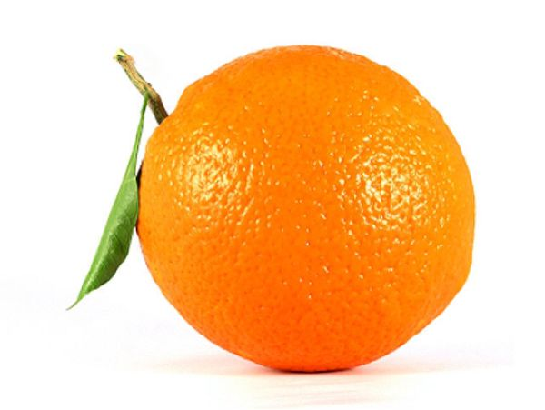

tentangbuah.com
Definisi
Buah adalah organ pada tumbuhan berbunga yang
merupakan perkembangan lanjutan dari bakal buah (ovarium). Buah
biasanya membungkus dan melindungi biji. Aneka rupa dan bentuk buah
tidak terlepas kaitannya dengan fungsi utama buah, yakni sebagai
pemencar biji tumbuhan.
Pengertian buah dalam lingkup pertanian ( hortikultura ) atau
pangan adalah lebih luas daripada pengertian buah di atas dan
biasanya disebut sebagai buah-buahan. Buah dalam
pengertian ini tidak terbatas yang terbentuk dari bakal buah,
melainkan dapat pula berasal dari perkembangan organ yang lain.
Karena itu, untuk membedakannya, buah yang sesuai menurut pengertian
botani biasa disebut
buah sejati.
Buah sering kali memiliki nilai ekonomi sebagai bahan pangan maupun
bahan baku industri karena di dalamnya disimpan berbagai macam
produk metabolisme tumbuhan, mulai dari karbohidrat, protein, lemak,
vitamin, mineral, alkaloid, hingga terpena dan terpenoid. Ilmu yang
mempelajari segala hal tentang buah dinamakan
pomologi.
Apel

Apel adalah jenis buah-buahan, atau buah yang
dihasilkan dari pohon buah apel. Buah apel biasanya berwarna merah
kulitnya jika masak dan (siap dimakan), namun bisa juga kulitnya
berwarna hijau atau kuning. Kulit buahnya agak lembek, daging
buahnya keras. Buah ini memiliki beberapa biji di dalamnya.
Orang mulai pertama kali menanam apel di Asia Tengah. Kini apel
berkembang di banyak daerah di dunia yang suhu udaranya lebih
dingin. Nama ilmiah pohon apel dalam bahasa Latin ialah
Malus domestica. Apel budidaya adalah keturunan dari
Malus sieversii asal Asia Tengah, dengan sebagian genom dari
Malus sylvestris (apel hutan/apel liar).
Kebanyakan apel bagus dimakan mentah-mentah (tak dimasak), dan juga
digunakan banyak jenis makanan pesta. Apel dimasak sampai lembek
untuk dibuat saus apel. Apel juga dibuat untuk menjadi minuman sari
buah apel.
Khasiat Apel
- Meningkatkan daya memori
- Baik untuk usus
- Meningkatkan sistem kekebalan tubuh
- Baik untuk jantung
- Menurunkan tekanan darah
- Mengurangi risiko diabetes
Daftar harga
| Jenis Apel | Harga | |
|---|---|---|
| Per Kilo | Per Biji | |
| Apel Manalagi | 50.000 | 5.000 |
| Apel Fuji | 60.000 | 6.000 |
| Apel Anna | 70.000 | 7.000 |
| Apel Merah | 55.000 | 5.500 |
Jeruk

Jeruk atau limau adalah semua tumbuhan berbunga
anggota marga Citrus dari suku Rutaceae (suku jeruk-jerukan).
Anggotanya berbentuk pohon dengan buah yang berdaging dengan rasa
masam yang segar, meskipun banyak di antara anggotanya yang memiliki
rasa manis. Rasa masam berasal dari kandungan asam sitrat yang
memang menjadi terkandung pada semua anggotanya.
Asal jeruk adalah dari Asia Timur dan Asia
Tenggara, membentuk sebuah busur yang membentang dari Jepang terus
ke selatan hingga kemudian membelok ke barat ke arah India bagian
timur. Jeruk manis dan sitrun (lemon) berasal dari Asia Timur,
sedangkan jeruk bali, jeruk nipis dan jeruk purut berasal dari Asia
Tenggara.
Banyak anggota jeruk yang dimanfaatkan oleh manusia sebagai bahan
pangan, wewangian, maupun industri. Buah jeruk adalah sumber vitamin
C dan wewangian/parfum penting. Daunnya juga digunakan sebagai
rempah-rempah.
Khasiat Jeruk
- Menghaluskan kulit
- Menghindari radikal bebas
- Menghilangkan sel-sel kulit mati dan jerawat
- Membangkitkan semangat dan energi
- Mengatasi kaki bengkak
- Mengurangi Panas Perut
Daftar harga
| Jenis Jeruk | Harga | |
|---|---|---|
| Per Kilo | Per Biji | |
| Jeruk Bali | 50.000 | 5.000 |
| Jeruk Nipis | 60.000 | 6.000 |
| Jeruk Mandarin | 70.000 | 7.000 |
| Jeruk Purut | 55.000 | 5.500 |
Mangga

Buah Mangga termasuk kelompok buah batu (drupa)
yang berdaging, dengan ukuran dan bentuk yang sangat berubah-ubah
bergantung pada macamnya, mulai dari bulat (misalnya mangga gedong),
bulat telur (gadung, indramayu, arumanis) hingga lonjong memanjang
(mangga golek). Panjang buah kira-kira 2,5–30 cm. Pada bagian ujung
buah, ada bagian yang runcing yang disebut paruh. Di atas paruh ada
bagian yang membengkok yang disebut sinus, yang dilanjutkan ke
bagian perut.
Kulit buah agak tebal berbintik-bintik kelenjar; hijau, kekuningan
atau kemerahan bila masak. Daging buah jika masak berwarna merah
jingga, kuning atau krem, berserabut atau tidak, manis sampai masam
dengan banyak air dan berbau kuat sampai lemah. Biji berwarna putih,
gepeng memanjang tertutup endokarp yang tebal, mengayu dan berserat.
Biji ini terdiri dari dua keping; ada yang monoembrional dan ada
pula yang poliembrional
Asal Mangga berasal dari daerah di sekitar
perbatasan India dengan Burma, dan mangga telah menyebar ke Asia
Tenggara sekurang-kurangnya semenjak 1500 tahun yang silam. Buah ini
dikenal pula dalam berbagai bahasa daerah, seperti pelem atau poh
Khasiat Mangga
- Membersihkan kulit wajah
- Mengontrol gula darah
- Melancarkan pencernaan
- Menjaga daya tahan tubuh
- Menurunkan berat badan
- Pilihan camilan sehat
Daftar harga
| Jenis Mangga | Harga | |
|---|---|---|
| Per Kilo | Per Biji | |
| Mangga Manalagi | 50.000 | 5.000 |
| Mangga Gadung | 60.000 | 6.000 |
| Mangga Arumanis | 70.000 | 7.000 |
| Mangga Golek | 55.000 | 5.500 |
Pisang

Pisang adalah nama umum yang diberikan pada
tumbuhan terna raksasa berdaun besar memanjang dari suku Musaceae.
Beberapa jenisnya (Musa acuminata, M. balbisiana, dan M. ×paradisiaca) menghasilkan buah konsumsi yang dinamakan sama. Buah ini tersusun
dalam tandan dengan kelompok-kelompok tersusun menjari yang disebut
sisir. Hampir semua buah pisang memiliki kulit berwarna kuning
ketika matang, meskipun ada beberapa yang berwarna jingga, merah,
hijau, ungu, atau bahkan hampir hitam. Buah pisang sebagai bahan
pangan merupakan sumber energi (karbohidrat) dan mineral, terutama
kalium.
Pusat keragaman utama pisang terletak di daerah Malesia (Asia
Tenggara, Papua dan Australia tropika). Pusat keragaman minor juga
terdapat di Afrika tropis. Tumbuhan ini menyukai iklim tropis panas
dan lembap, terutama di dataran rendah. Di daerah dengan hujan
merata sepanjang tahun, produksi pisang dapat berlangsung tanpa
mengenal musim. Indonesia, Kepulauan Pasifik, negara-negara Amerika
Tengah, dan Brasil dikenal sebagai negara utama pengekspor pisang.
Masyarakat di negara-negara Afrika dan Amerika Latin dikenal sangat
tinggi mengonsumsi pisang setiap tahunnya.
Khasiat Pisang
- Baik bagi pencernaan
- Menurunkan tekanan darah
- Menurunkan risiko stroke
- Menjaga daya tahan tubuh
- Meningkatkan stamina olahraga
- Mengandung serat tinggi
Daftar harga
| Jenis Pisang | Harga | |
|---|---|---|
| Per Kilo | Per Biji | |
| Pisang kepok | 50.000 | 5.000 |
| Pisang Raja | 60.000 | 6.000 |
| Pisang Tanduk | 70.000 | 7.000 |
| Pisang Susu | 55.000 | 5.500 |